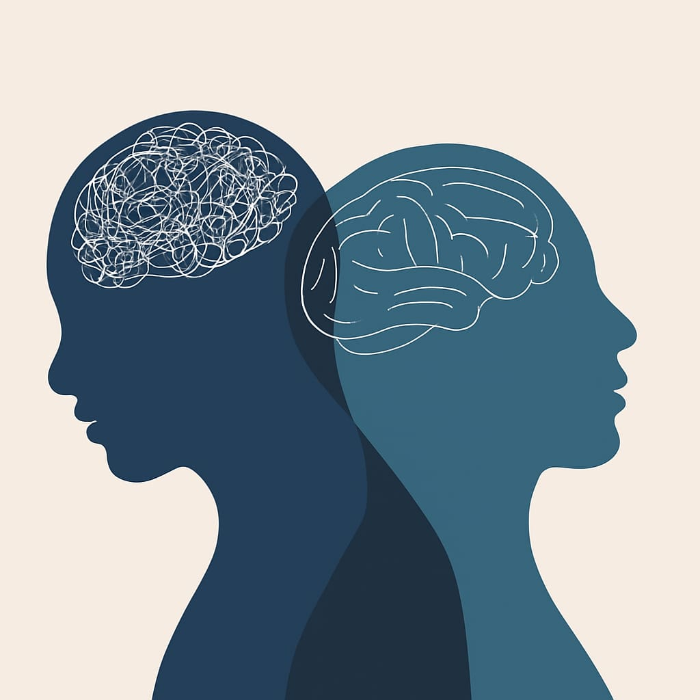
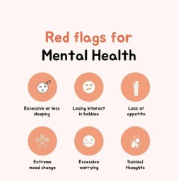
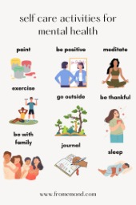

Mental health is a vital component of our overall well-being. It encompasses our emotional, psychological, and social health, affecting how we think, feel, act, and relate to others. A mentally healthy person is better equipped to cope with stress, work productively, and contribute to their community.
According to the World Health Organization (WHO), mental health is more than the absence of mental disorders—it’s a state of well-being where individuals realize their potential, handle life's stresses, and function effectively in society.
Common Mental Health Challenges
Mental health issues range from temporary stress responses to long-term psychiatric conditions.
Common disorders include:
Each disorder requires specific types of care and support. Early intervention is critical in improving long-term outcomes.
Mood swings are sudden or intense changes in emotional states like moving quickly from happiness to irritability or sadness. Everyone experiences mood shifts occasionally, but when they’re frequent or extreme, they may signal an underlying issue.
Causes of Mood Swings:
Some mood swings are temporary and situational (e.g., stress before an exam), while others may be symptoms of deeper, ongoing psychological conditions.
Teenagers are especially prone to emotional ups and downs. A 2024 review in the Indian Journal of Child Health states that up to 80% of adolescents experience noticeable mood shifts due to:
It’s time to consider professional support if:
The National Institute of Mental Health (NIMH) emphasizes that mental illness is treatable. Therapy, medication, and lifestyle changes can significantly improve quality of life.

Whether you're dealing with stress or a diagnosed condition, these strategies can help:
